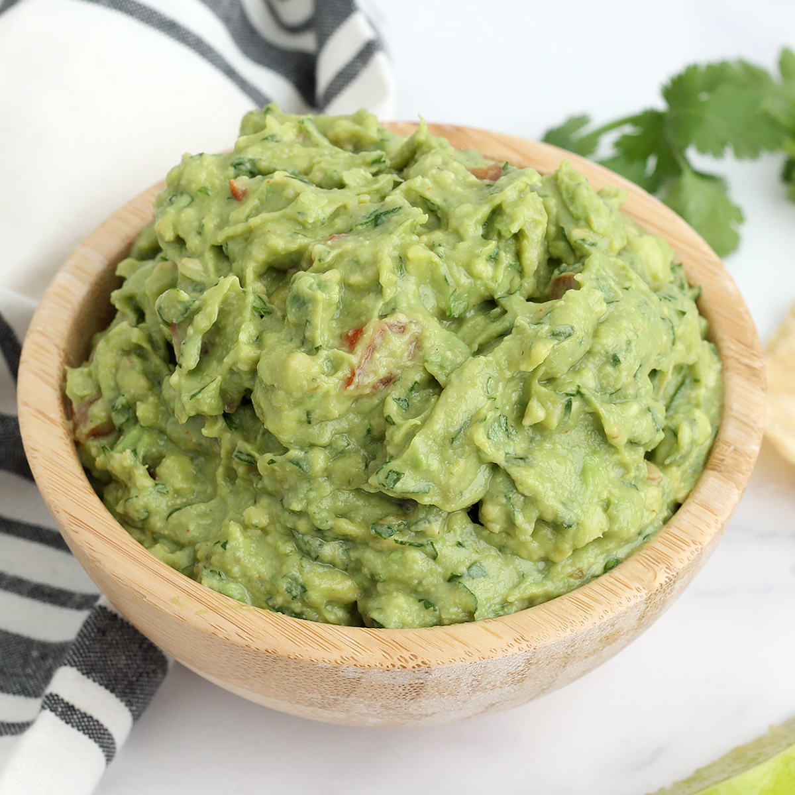

Guacamole

Description
This quick & easy guacamole recipe is made with a handful of healthy ingredients and is ready in 5 minutes!
Grab your chips and enjoy!
Ingredients
- 3 Medium Avocados
- 1/2 tsp ground cumin
- 1/2 tsp garlic powder
- 1/2 tsp onion powder
- 1/2 - 1 tsp sea salt
- 1/4 tsp freshly ground black pepper
- 1-2 TBS lime juice
- 2 TBS chopped fresh cilantro
- 2 small tomatoes deseeded and diced
Steps
- Cut open avocados lengthwise, remove the pit, and use a spoon to scoop out the flesh into a medium-sized mixing bowl.
- Use a potato masher or fork and gently mash the avocado, leaving it a little bit chunky at this point.
- Add cumin, garlic powder, onion powder, ½ tsp salt, pepper and 1 TBS lime juice.
- If you would like your guacamole smoother, use a fork or your potato masher to mix in the spices as you mash the mixture. If you like your guacamole a little chunkier, use a rubber spatula to stir in the spices until well combined!
- Add cilantro and tomatoes and stir until combined.
- Taste and add extra salt or lime juice if needed!
- Let sit for at least 30 minutes at room temperature before serving.